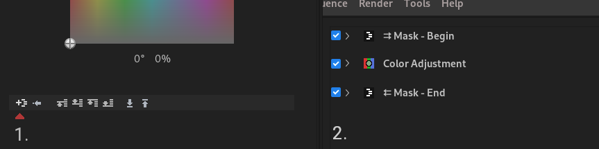

1. Advanced Project Actions
Combining Sequences
It is possible to import full contents of another Sequence into Sequence currently being edited.
- Select Sequence->Import Another Sequence into this Sequnce...
- Select Import action.
- Append Sequence adds imported Sequence at the end of current Sequence
- Insert Sequence at Playhead Position creates a cut at playhead position and inserts imported Sequences at that position
- Select a Sequence to Import
- Note that you obivously need atleast two Sequences to exist to do any import actions.
- Press Import button to execute import.
Split part of Sequence to new Sequence
- Select Sequence->Split to new Sequence at Playhead position
- After confirmation dialog the a new Sequence with contents of source Sequence after playhead position will be created and made active.
Importing Media from another Project
You can import Media Items from another Project.
- Select Project->Import Media From Project...
- Select a Project file from file system.
- Media items that are not present in current Project will be opened in the current bin. Note that it takes a few seconds to load the project before new Media Items begin to appear.
2. Timeline Audio Syncing
You can make a clip to move to a position in timeline in which its audio is in sync with audio of another clip on timeline.
This enables you to do simplified version of multicam editing on the timeline.
- Open context menu with Right Mouse on Clip you wish to sync with some other clip.
- Select menu item Select Clip to Audio Sync With.... The cursor changes to a targeting cross.
- Click on Clip you wish to audio sync with.
- A dialog opens giving info on the sync action that is to be done to sync clips.
- Press Do Audio Sync Move Edit button to do the syncing edit.
- It is usually a good idea to mute one of the synched clips
3. Slow / Fast Motion and Reverse Clips
In Flowblade motion effects are achived by rendering slow / fast motion or reverse versions of video clips and placing those on the timeline.
Creating Motion Clips
- Right click on a Media File and select Render Slow / Fast Motion File from menu
- Edit parameters for the new motion Clip
- Set speed
- Give name and location for motion Clip
- Select rendering parameters for motion Clip. It is probably a good idea to use a lossless format here to avoid any generational quality losses.
- Select render range, either:
- Full Source Clip
- From Source Clip Mark In to Mark Out
- Click Render button to create a new motion Clip
Creating Reverse Clips
- Right click on a Media File and select Render Reverse Motion File from menu
- Edit parameters for the new motion Clip
- Set speed
- Give name and location for reverse Clip
- Select rendering parameters for reverse Clip. It is probably a good idea to use a lossless format here to avoid any generational quality losses.
- Select render range, either:
- Full Source Clip
- From Source Clip Mark In to Mark Out
- Click Render button to create a new reverse Clip
4. Clip Parenting
In Flowblade Movie Editor you can set a clip's positions to follow another clip's positions on request.
Main points
- Sync relations are set up by selecting a Sync Parent Clip for a Sync Child Clip.
- Only clips on track V1 can be Sync Parent Clips. This is done to encourage edit style in which the main body of the Sequence is on track V1 and composites and audio split edits are done relative to the clip sequence on track V1.
- Sync feature helps preserve earlier work an multitrack composites and audio split edits when clips are no longer in correct positions relative to each other, because of edits elsewhere on the Sequence.
- Resyncs are only done on request to avoid jumping of clips on the timeline while editing. Explicit resyncs are also better from the point of view of avoiding side effects when doing edits.
Setting Sync Parent
- Click Right Mouse on clip and select Select Sync Parent Clip... on any clip NOT on track V1.
- Cursor turns into a Target Cross. Click on clip on track V1 to select it as Sync Parent Clip.
- Sync Relation is established between the two clips. Cursor turns back into a default pointer.
- Sync State Stripe appers on the Sync Child Clip. Sync State Indicator Stripes on Clips:
- Green means that clip is in sync with parent.
- Red means that clip is NOT in sync with parent.
- Gray means that Sync Parent Clip is no longer on track V1.
Resyncing Sync Child Clips
- Select Edit - >Resync Selected to resync from application menu selected Sync Child Clips.
- Click Right Mouse on Sync Child Clip and select Resync from popoup menu to resync single clip.
- Press Resync Selected Bbtton to resync selected Sync Child Clips.
Clearing Sync Parent Relations
- Click Right Mouse on Sync Child Clip and select Clear Sync Relation.
Syncing Composited Clips
- If appropriate set all clips that are part of a multitrack composite synched to the same clip.
Audio Split Syncing
- Click Right Mouse on clip in track V1 and select Split Audio Synched.
- Edit audio split using Two Roll Trim mode to maintain sync with parent clip.
- Resync Audio as needed.
5. Timeline Rendering
Timeline rendering is way to achieve smooth playback on areas of timeline that place to heavy demands on system resources for acceptable playback.
Turning timeline rendering on
There are two places user can swicth timeline rendering on
- Menu in bottom left corner.
- Menu item Sequence->Timeline Rendering.

Timeline render menu launcher at left, rendered and unrendered range shown on Timeline Render Control Strip.
Timeline Render Modes
User can select from two different modes when activating timeline rendering.
- Render Auto. In this mode defined ranges are rendered automatically if timeline content in range changes.
- Render On Request. In this mode renges are renderd on user request.
User actions
- Creating render range. Drag with Mouse Left on Timeline Render Control Strip to create new range.
- Making render range bigger. Drag with Mouse Left on Timeline Render Control Strip from center over one side to make range larger in that direction. To make range larger on both sides drag over current full range.
- Combining render ranges. Drag with Mouse Left over multiple ranges.
- Deleting render ranges. Click on range to select it and press Delete key or click with Mouse Right on Timeline Render Control Strip and select item from menu to delete range.
- Requesting render in Mode 'Render On Request'. Double click on render range or click with Mouse Right on Timeline Render Control Strip and select item from menu render range.
Settings
Timeline rendering encoding can be selected from Sequence->Timeline Rendering->Settings.
6. Filter Masking
Filter masking allows for one or more filters to be applied only on some user defined part of image.
Filter masking menu launch button above 'Add Filter Mask' tootip, Mask - Begin and Mask - End filters defining which filters are masked, on the right image with masked Sepia filter.
- Click Filter Mask Menu launch button and select if you wish to apply mask on one or all filters.
- In submenu select between Alpha Shape and Luma Key masks.
- Edit mask parameters in filter edit panel for Mask - Begin filter.
- You can drag and drop filters in and out of the masked range of filter stack.